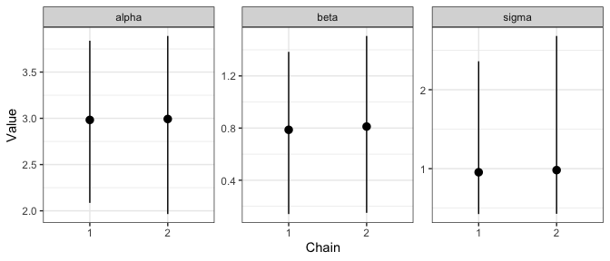

Tidying up MCMC output can be a real pain. There are plenty of packages that help with summarising MCMC and providing their own summaries, but sometimes you just want a tidy data structure so you can do your own thing. And quickly.
mmcc provides tidying functions that return tidy data structure from mcmc.list objects. It uses data.table as the backend for speediness, it also provides broom tidiers to assist in some quick summaries.
Installation
Install from github using:
# install.packages("remotes")
remotes::install_github("njtierney/mmcc")Using mmcc
mcmc_to_dt takes an mcmc.list object and turns it into a data.table of the format:
library(coda)
data(line)
head(data.frame(line$line1))
#> alpha beta sigma
#> 1 7.17313 -1.566200 11.233100
#> 2 2.95253 1.503370 4.886490
#> 3 3.66989 0.628157 1.397340
#> 4 3.31522 1.182720 0.662879
#> 5 3.70544 0.490437 1.362130
#> 6 3.57910 0.206970 1.043500
library(mmcc)
mcmc_dt <- mcmc_to_dt(line)
mcmc_dt
#> iteration chain parameter value
#> 1: 1 1 alpha 7.173130
#> 2: 2 1 alpha 2.952530
#> 3: 3 1 alpha 3.669890
#> 4: 4 1 alpha 3.315220
#> 5: 5 1 alpha 3.705440
#> ---
#> 1196: 196 2 sigma 1.306930
#> 1197: 197 2 sigma 0.846828
#> 1198: 198 2 sigma 0.465129
#> 1199: 199 2 sigma 0.672417
#> 1200: 200 2 sigma 0.639787tidy.mcmc.list takes an mcmc.list, turns it into a data.table and summarises it in terms of each parameter’s mean, median, standard deviation and credible interval with level given by conf.level:
tidy(line)
#> parameter mean sd 2.5% median 97.5%
#> 1: alpha 2.9875644 0.4983950 1.9650403 3.0188300 3.876589
#> 2: beta 0.7991864 0.3366834 0.1430713 0.7962500 1.469723
#> 3: sigma 0.9680519 0.7413014 0.4249618 0.7911975 2.559520We can also optionally ask for a subset of the parameters with a vector of colnames and summarise for each chain:
tidy(line,
chain = TRUE,
colnames=c("alpha"))
#> parameter chain mean sd 2.5% median 97.5%
#> 1: alpha 1 2.982615 0.5313900 2.085719 2.973115 3.838839
#> 2: alpha 2 2.992514 0.4643476 1.965040 3.063630 3.890256This may be useful if we want to make a plot that shows how a given parameter varies from chain to chain.
library(ggplot2)
line_tidy <- tidy(line, chain = TRUE)
ggplot(data = line_tidy,
aes(x = factor(chain),
y = mean)) +
geom_pointrange(aes(ymin = `2.5%`,
ymax = `97.5%`)) +
facet_wrap(~parameter,
nrow = 1,
scales = "free_y") +
theme_bw() +
xlab("Chain") +
ylab("Value")
Helpers
mmcc provides helpers to extract the number of chains, iterations, simulations, and variables in an MCMC object:
glance helper
General model summary providing information on:
- Number of chains
- Number of iterations
- Number of variables/parameters
- Lower and upper effective sample size (ESS)
- lower and upper estimates of rhat measurement of convergence assessment
glance(line)
#> n_chains n_iter n_var ess_lower ess_upper rhat_lower rhat_upper
#> 1 2 200 3 167.5889 455.3178 1.000695 1.037599Diagnostics
diag_autocorr(line)
diag_ess(line)
#> chain parameter ess
#> 1: 1 alpha 200.00000
#> 2: 1 beta 249.43130
#> 3: 1 sigma 90.16969
#> 4: 2 alpha 255.31778
#> 5: 2 beta 200.00000
#> 6: 2 sigma 77.41925
diag_mc_stderr(line)
#> Warning in bmeans(v$value, b_size, warn): likely too few samples (less than
#> 1000) for estimating Monte Carlo standard errors
#> Warning in bmeans(v$value, b_size, warn): likely too few samples (less than
#> 1000) for estimating Monte Carlo standard errors
#> Warning in bmeans(v$value, b_size, warn): likely too few samples (less than
#> 1000) for estimating Monte Carlo standard errors
#> Warning in bmeans(v$value, b_size, warn): likely too few samples (less than
#> 1000) for estimating Monte Carlo standard errors
#> Warning in bmeans(v$value, b_size, warn): likely too few samples (less than
#> 1000) for estimating Monte Carlo standard errors
#> Warning in bmeans(v$value, b_size, warn): likely too few samples (less than
#> 1000) for estimating Monte Carlo standard errors
#> parameter chain mean value
#> 1: alpha 1 2.9826146 0.03667355
#> 2: alpha 2 2.9925142 0.03001358
#> 3: beta 1 0.7866946 0.02285799
#> 4: beta 2 0.8116781 0.02778074
#> 5: sigma 1 0.9544249 0.10259971
#> 6: sigma 2 0.9816789 0.04737521Thinning
thin_dt(mcmc_to_dt(line), thin = 10)
#> iteration chain parameter value
#> 1: 1 1 alpha 7.173130
#> 2: 11 1 alpha 3.065240
#> 3: 21 1 alpha 2.876460
#> 4: 31 1 alpha 2.943310
#> 5: 41 1 alpha 3.087570
#> ---
#> 116: 151 2 sigma 0.764629
#> 117: 161 2 sigma 1.315890
#> 118: 171 2 sigma 1.034110
#> 119: 181 2 sigma 2.362830
#> 120: 191 2 sigma 1.009290Why the name, “mmcc”?
Full credit does to Sam Clifford for the name.
To quote Sam:
…it’s all about reshaping and manipulating mcmc chains…therefore, mmcc
Future work
- Summaries for each parameter
- More diagnostic summaries for convergence
Code of Conduct
Please note that this project is released with a Contributor Code of Conduct. By participating in this project you agree to abide by its terms.